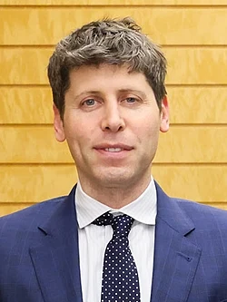

Sam Altman
Entrepreneur, Investor & CEO of OpenAI


"We need to be careful about the way we build and deploy powerful AI systems."
OpenAI · Y Combinator
Early Life
Born in Chicago and raised in St. Louis, Missouri, Sam Altman displayed an early interest in technology and computers. He went on to study computer science at Stanford University, where he began building the foundation for what would become a defining career in the tech industry.
Career & Achievements
Loopt
Co-founder
Built an early location-based social networking app
Y Combinator
President
Mentored and funded hundreds of early-stage startups
OpenAI
CEO
Leading development of some of the world's most advanced AI systems
AI & Technology
Thought Leader
Recognized globally as a leading voice on the future of artificial intelligence
Why I Admire Him
What sets Sam Altman apart is his ability to recognize transformative technology long before it becomes mainstream, and his willingness to take calculated risks in pursuit of ambitious goals. His leadership at OpenAI reflects a rare combination of technical vision and strategic clarity — qualities that continue to shape how the world engages with artificial intelligence today.